Education
Information Systems Student
HELLO, I'M
Full-Stack Web Developer
Passionate about software engineering, frontend development, software quality assurance, and building digital products that solve real-world problems.
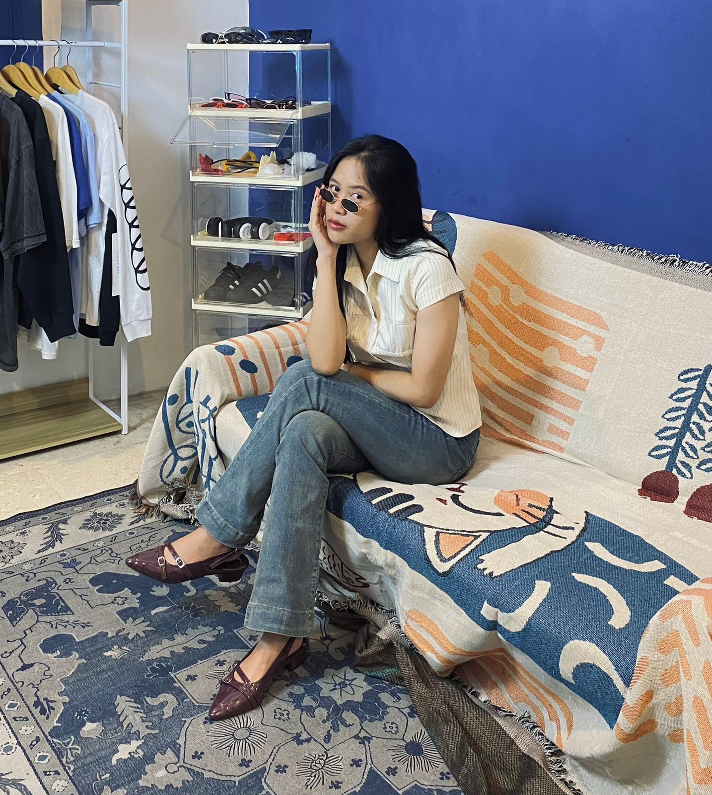
02. ABOUT ME
I am an Information Systems student with a strong interest in Software Engineering, Frontend Development, and Software Quality Assurance. I enjoy building modern web applications, learning new technologies, and collaborating to solve real-world problems through clean and maintainable code.
Information Systems Student
Coding Camp Dicoding X DBS Foundation 2026 Graduate
Full-Stack Web Development & Software QA
Tulungagung, East Java
03. TECH STACK
Throughout my academic journey and projects, I have worked with various technologies for web development, software testing, databases, networking, and collaborative software development.
04. EXPERIENCE
Every experience has shaped my growth as a developer, from networking and operations to modern web development and collaborative software engineering.
Successfully completed Coding Camp 2026 and developed CareerPathAI as a collaborative capstone project using modern frontend technologies.
Studying software engineering, system analysis, database, UI/UX, and web development.
Customer service, inventory management, teamwork, and operational activities.
Wireless installation, troubleshooting, Mikrotik configuration, and documentation.
05. SELECTED WORKS
CareerPathAI is a web-based platform developed as the Capstone Project of Dicoding Coding Camp 2026. The platform helps users discover suitable career paths through AI recommendations, interactive assessments, and a modern responsive user interface.
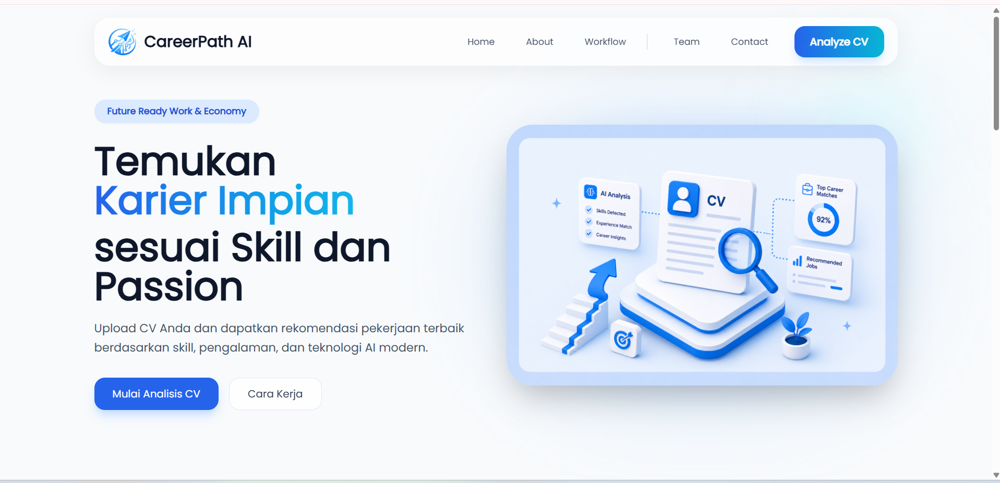
Team ProjectBuilt collaboratively during Dicoding Coding Camp.
AI RecommendationCareer recommendation powered by Machine Learning.
ResponsiveOptimized for desktop, tablet and mobile devices.
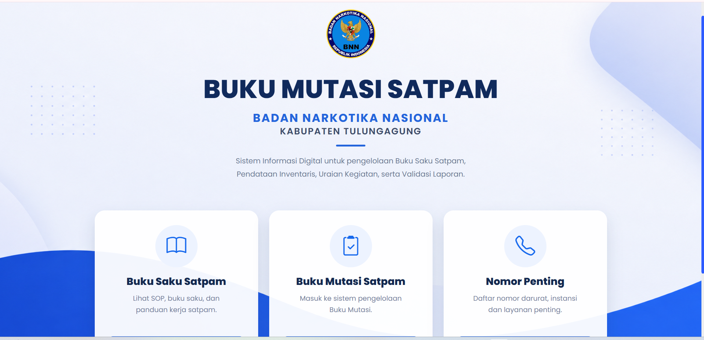
A PHP-based information system designed to support the recording and management of security operations at BNN Tulungagung.
View repository ↗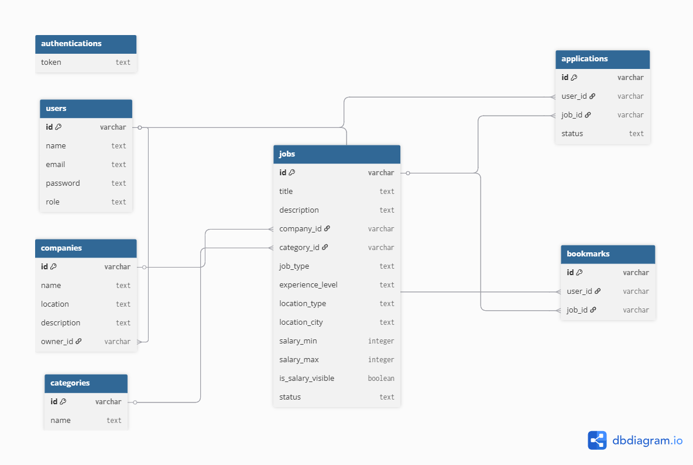
A Dicoding submission focused on developing back-end services with JavaScript.
View repository ↗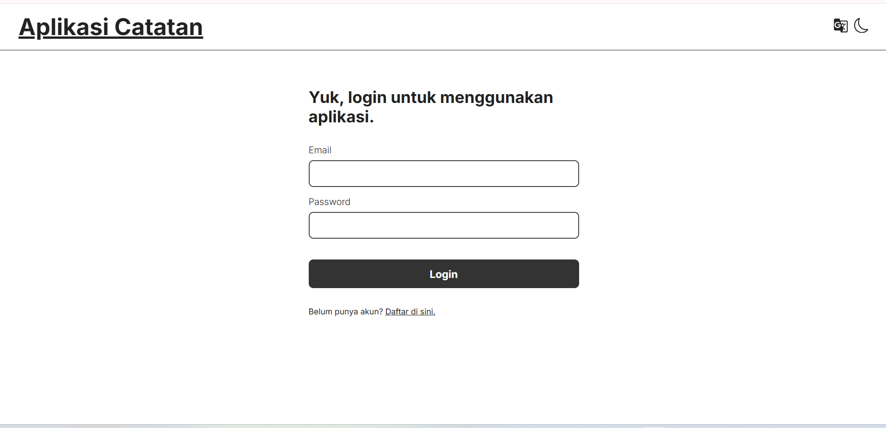
A Dicoding submission focused on building a component-based web application with React.
View repository ↗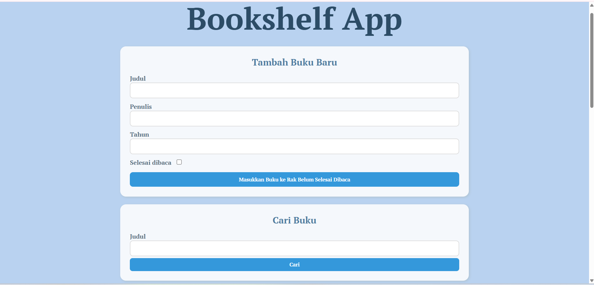
A project submission that applies fundamental front-end web development concepts with JavaScript.
View repository ↗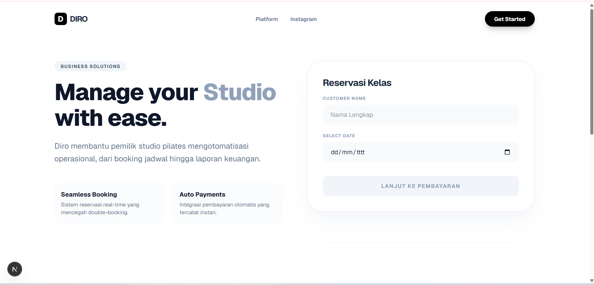
A TypeScript-based application developed as a practical web application project.
View repository ↗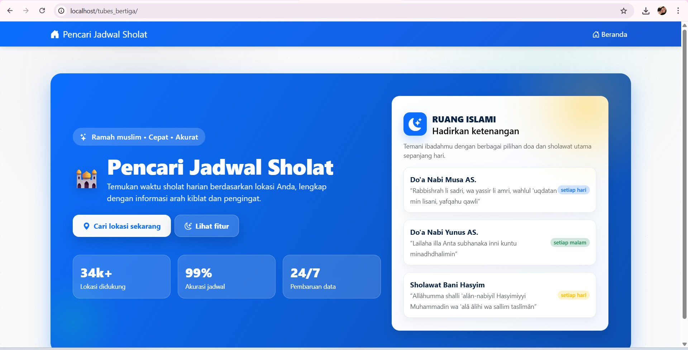
Built a responsive web application using the Aladhan API to display real-time prayer schedules. This project also served as the primary application for my automated testing work.
View repository ↗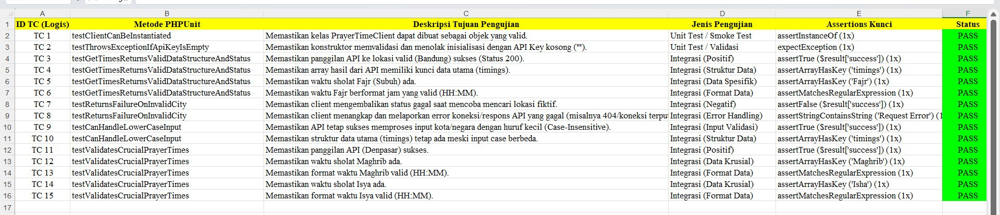
Performed manual and automated testing for a Prayer Time API application, covering unit testing, API validation, integration testing, and response verification using PHPUnit.
View repository ↗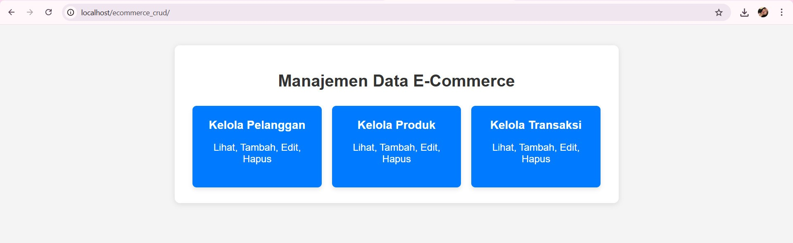
Built a PHP and SQL-based digital inventory management system supporting Create, Read, Update, and Delete operations for efficient product data management.
View repository ↗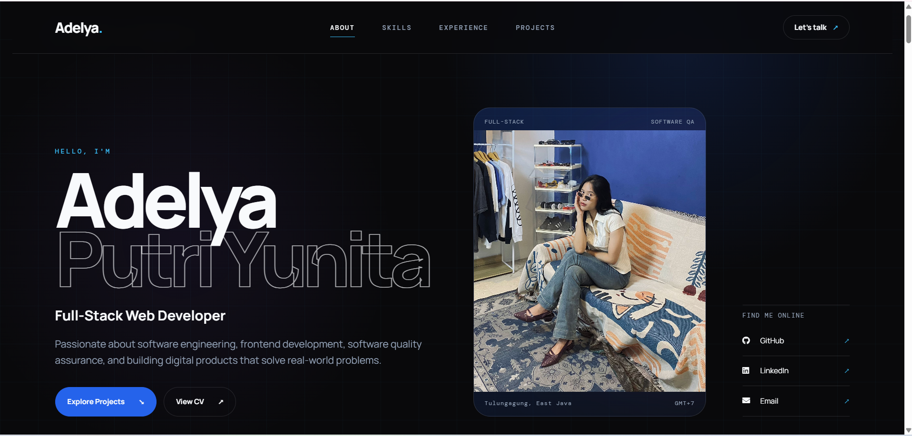
A personal portfolio repository for presenting my profile, experience, and selected projects.
View repository ↗